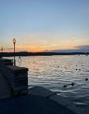
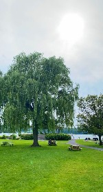

Map of Cazenovia from Google:
|  | Click on the thumbnail here for a larger picture of the beautiful sunset views you can enjoy in Cazenovia. This picture was taken from Lake Land Park which is the perfect sunset-veiwing spot! |
|  | Click on the thumbnail here for a larger picture of one of Cazenovia's most beautiful spots, Lake Land Park. This park is perfect for picnics and has a diving board right into the lake. Concerts are held here every Thursday with a local band. The spot is a must-do in Caz! |
| Click on the thumbnail here for a larger picture of one of the many beautiful sunset in Cazenovia. The peaceful lake offers the perfect reflection to the colorful sky and clouds. The mountains in the distance and the trees surrounding the lake offer perfect scenery to go with the beautiful weather of summer in Caz. |